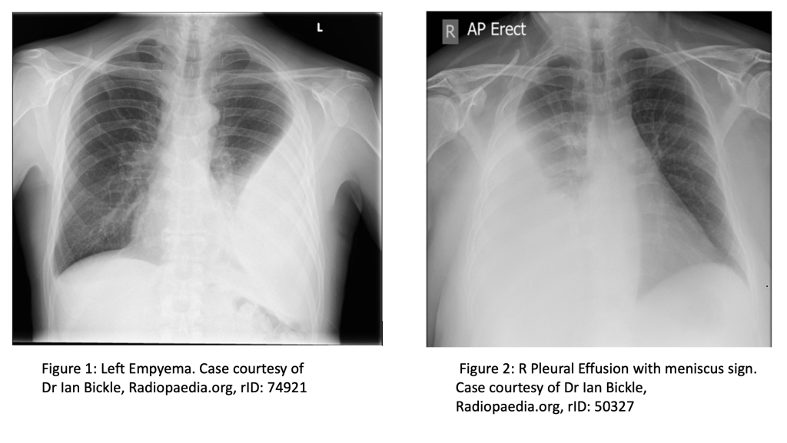
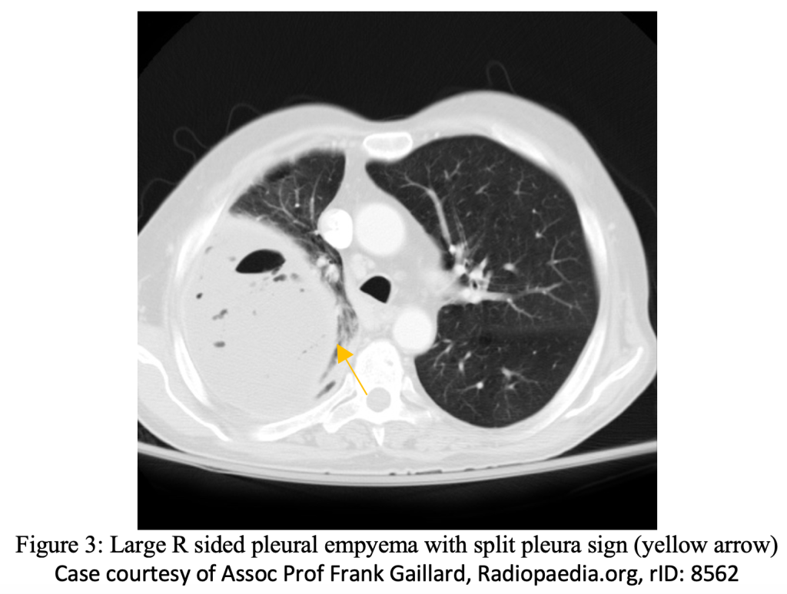
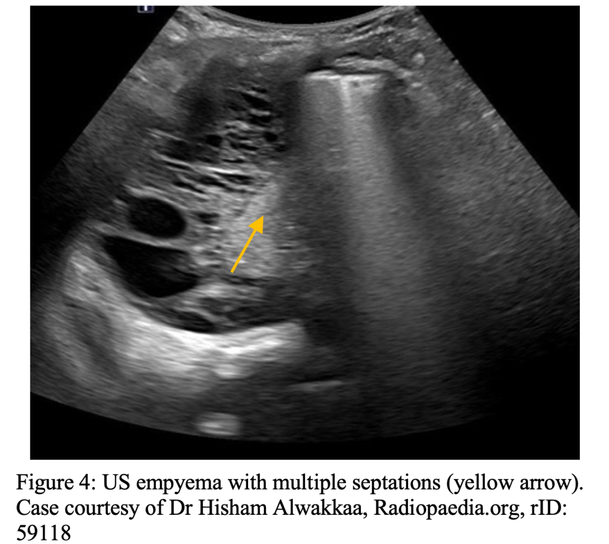

Case
A 60-year-old male with past medical history of Type 2 diabetes mellitus presents to the emergency department (ED) complaining of worsening dyspnea, fever, and cough. He was recently seen in the ED for pneumonia for which he was prescribed doxycycline. However, he states he only took two days of the medication before discontinuing. In addition, patient endorses chronic alcohol ingestion and is intermittently taking metformin for his diabetes. On exam, patient is tachycardic, tachypneic, febrile, with poor dentition, and diminished lung sounds in the base of the right lung. Chest X-Ray (CXR) shows consolidation involving base of the left lung with blunting of the costophrenic angles. Chest Computed Tomography (CT) with IV contrast shows lenticular loculations involving parietal pleural space with surrounding pneumonia.
What are the best next steps in this patient’s management? What is the disposition of this patient?
Definition
Put simply, an empyema refers to a collection of pus within the pleural space. This can be caused by bacteria, fungi, parasites, or mycobacteria because of adjacent pneumonia, direct inoculation (blunt trauma/prior chest tube), or other source.1
Epidemiology
Since the advent and widespread use of antibiotics, parapneumonic effusions and empyema as a complication of pneumonia have an incidence rate of approximately 2-3%.2 However, some epidemiological studies have suggested that rates are beginning to slowly rise. One study, involving over four-thousand patients with empyema, showed a 2.8% increase in incident per year between 1987 and 2004.3 In addition, a Canadian study showed a 2.2 fold increase in incidence among those less than 19 years old and 1.2 fold increase in those greater than 19 years old.4 Patients hospitalized with pneumonia are at greatest risk, with one study showing that 20-40% of admitted pneumonia have/develop a parapneumonic effusion with 5-10% of these cases developing empyema.5
Risk Factors
As one would expect, pneumonia is a large risk factor for developing an empyema. Therefore, there is much overlap between the risk factors for developing pneumonia and empyema. Commonly cited risk factors are listed below:1,6-9
- Aspiration
- Poor dental hygiene
- Malnutrition
- Alcohol/Intravenous drug use (IVDU)
- Immunosuppression
- Partially treated pneumonia
- Gastroesophageal reflux disease (GERD)
- Pre-existing pleural fluid (i.e. heart/liver failure, cancer)
- Intraabdominal infection leading to translocation of bacteria across diaphragm
Presentation
Patients with empyema usually present with symptoms similar to that of pneumonia. These include fever, dyspnea, cough, increased sputum production, and pleuritic chest pain. If symptoms have been ongoing despite appropriate antibiotic administration, this should raise suspicion for development of a parapneumonic effusion or empyema.1 In addition, when compared to pneumonia, empyema can lead to prolongation of symptoms, such as fever and malaise, for up to two weeks.10 In those patients at risk for anaerobic infections (i.e. aspiration, poor dental hygiene) symptoms may be more insidious and delayed with loss of appetite and weight loss lasting over weeks to months.6,7
Evaluation
In order to diagnose an empyema, one needs to be able to see inside the chest. The following are three main imaging modalities commonly used in the ED in evaluation of empyema.
- Chest X-Ray: due to the widespread availability and quick turn-around time, a CXR is usually the first imaging obtained in the ED. The classic appearance of an empyema on CXR is a biconcave shape protruding from the affected pleural space/chest wall.11
- Contrast this with findings seen in free-flowing pleural effusions which accumulate in the most dependent part of the thoracic cavity.12 On an AP CXR view, a pleural effusion >175 ml can demonstrate blunting of the lateral costophrenic angle while effusions >500 ml can obscure the diaphragm completely and demonstrate a meniscus sign.13
- CXR does have limitations in the setting of loculated effusions such as empyema. Layering of fluid and meniscus sign are normally absent leading to the possibility of missing a small empyema. If empyema is on your differential, the threshold to order a CT with contrast should be low. To further demonstrate the limitations of CXR, AP and lateral CXR missed approximately 10% of pleural effusions in a study involving 61 patients with CT confirmed parapneumonic effusions.14 Although this study looked at pleural effusions, it would be reasonable to extrapolate the results to the diagnosis of empyemas.

- Chest Computed Tomography: Chest CT with IV contrast is the most sensitive imaging modality for detecting and differentiating an empyema. CT can quantify the extent of an empyema as well as demonstrate underlying pneumonia, cancer, diaphragmatic effects, esophageal injury, and fistulae. Chest CT will show parietal pleural thickening in 86% and pleural enhancement in 96% of patients with empyema.16 A split pleura sign can be appreciated when there is significant (usually >30mm) separation of the pleural surfaces and resultant thickening of the visceral and parietal pleura; this can be appreciated in up to approximately 68% of patients with significant empyema.16,18 Chest CT is your go-to imaging modality if concerned about empyema.

- Ultrasound: Ultrasound (US) is a quick and efficient imaging modality that can be performed bedside for rapid evaluation in a patient with dyspnea and infectious symptoms. US allows the operator to further differentiate between pneumonia, pleural effusion, and loculations/septations within an empyema. On US, an empyema may appear as an echogenic swirling fluid within a pleural effusion.19 In addition, the presence of septa within an empyema on US portends to more severe illness with increased length of hospital stay, possible need for large bore chest tube drainage, intrapleural fibrinolytic therapy, and surgical intervention.20 Finally, US allows the physician to locate the optimal area in which to introduce an intrapleural catheter/chest tube.
- For a video of performing a comprehensive lung exam using US click here.

Diganosis
The diagnosis of empyema primarily relies on imaging. Thoracentesis is usually indicated for fluid analysis, which can guide further management. US can be utilized to help locate the largest area of fluid collection within the empyema and guide needle/tube placement for the thoracentesis. If frank pus is observed when sampling the pleural fluid collection, the diagnosis of empyema is confirmed.
Fluid obtained by thoracentesis should be sent for the following:1
- Cell Count with Differential
- Total Protein
- Lactate Dehydrogenase
- Aerobic Culture
- Anaerobic Culture
- Fungal Culture
- Mycobacterial Culture
- Cytology
Blood cultures should be obtained, although many patients with empyema have negative blood cultures.1
Management
After initial stabilization of airway, breathing, and circulation, early antibiotic coverage and source control by way of drainage are the next steps.
- Antibiotics: Generally, empiric intravenous (IV) antibiotics are started when the diagnosis of empyema is known or expected. Antibiotic therapy should not be delayed for any diagnostic procedure including thoracentesis as delay in antibiotic initiation has been shown to increase in mortality.21 Antibiotic coverage of empyema is subdivided into community acquired and hospital acquired in order to appropriately treat the most common offending organisms.
- Community-acquired:An IV regimen targeting Streptococcus pneumoniae, oropharyngeal flora, and anaerobic bacteria. This regimen will generally include a third generation cephalosporin plus an agent with anaerobic coverage.21 Some treatment options can be seen below:
- Ceftriaxone 2 g IV once daily + Metronidazole 500 mg TID
- Cefotaxime 2 g IV q 8 hrs + Metronidazole 500 mg TID
- Hospital-acquired: Hospital acquired empyema is defined as being derived from a Hospital Acquired Pneumonia (HAP) or post-procedural (Video-Assisted Thoracic Surgery (VATS), prior chest tube insertion etc.).21 IV antibiotics that target MRSA, gram negative bacteria (including Pseudomonas spp), and anaerobic bacteria. Several treatment options can be seen below:
- Vancomycin + Metronidazole 500 mg TID + Cefepime 2 g q 8 hrs
- Vancomycin + Metronidazole 500 mg TID + Ceftazidime 2 g q 8 hrs
- Vancomycin + Piperacillin/Tazobactam 4.5 g q 6 hrs
- Penicillin allergy options:
- Vancomycin + Metronidazole 500 mg TID + Ciprofloxacin 400 mg q 8 hrs
- Vancomycin + Meropenem 1 g q 8 hrs
- Drainage: In addition to antibiotic coverage, source control via drainage of the empyema is required. This is done by chest tube insertion with the guidance of ultrasound if available. There is no definitive recommendation on the exact size of chest tube to use as guidelines vary. Traditionally, larger bore (>24 Fr) chest tubes were recommended for empyema due to the viscous quality of the pus and pleural fluid. However, more recent literature to suggest that smaller bore tubes may be as efficacious as larger bore tubes. In a prospective, nonrandomized trial involving 454 patients who underwent chest tube drainage for empyema, no significant difference was found between mortality and need for thoracic surgery between large (15 to 20 Fr), medium (10 to 14 Fr) or small (<10 Fr “pigtail catheter”) chest tubes.22,23 As expected, patients reported markedly less pain with smaller size tube placement.23 It should be noted however that smaller tubes up to 14 Fr have a higher propensity for blockage due to viscus empyema drainage, blood, or proteinaceous debris with one study stating an occlusion rate of 11-30%.24 Therefore, if a small bore chest tube is placed, periodic flushing with 30 mL sterile saline every 6 hours via 3 way stopcock attached to the tube may be required in order to preserve chest tube patency.25 Suction is typically not needed unless there is an air leak or the pleural fluid fails to drain.1
- Click here for a walk-through video of small bore “pigtail catheter” placement
- Disposition: After antibiotic administration and chest tube placement, the patient should be admitted to the hospital for continued antibiotic therapy, monitoring of chest tube output and patient’s symptoms. If symptoms continue to worsen (increasing/relapsing fever, worsening leukocytosis, sepsis, etc.) this may be evidence of treatment failure and the patient may require VATS. However, many patients (50-80%) may respond to antibiotic adjustment, additional chest tube placement, and/or application of tPA/DNase through the tube in order to facilitate drainage.1
Summary/Learning Points
- Rates of empyema formation may be on the rise, with those admitted for pneumonia and those developing a parapneumonic effusion being at highest risk for developing empyemas
- Empyema share many of the same risk factors as pneumonia
- Patients with ongoing pneumonia symptoms despite appropriate antibiotic coverage should raise suspicion for possible pneumonic effusion/empyema formation
- Maintain a low threshold for ordering CT Chest with IV contrast, as this is the most sensitive imaging modality for diagnosing and characterizing empyemas
- Important to obtain pleural fluid samples via thoracentesis for both diagnostic and treatment purposes
- Important to differentiate community-acquired vs. hospital-acquired as this will help inform antibiotic administration
- Source control via drainage by way of chest tube is imperative with some studies suggesting small bore is equivalent to large bore tubes
- Patients with empyema need to be admitted for continued observation with only a small sub-group needing surgical intervention
More FOAMed Resources
- http://www.emdocs.net/ed-evaluation-and-management-of-pleural-effusions-one-size-doesnt-fit-all/
- https://litfl.com/lung-ultrasound-empyema/
- https://www.coreultrasound.com/how-to-perform-a-pulmonary-exam/
- https://www.coreultrasound.com/pleural-effusions-part-1/
- https://www.coreultrasound.com/pleural-effusions-part-2/
- Pig tail placement: https://www.youtube.com/watch?v=FDxZyR9abAs
References
- Strange, Charlie MD. Epidemiology, clinical presentation, and diagnostic evaluation of parapneumonic effusion and empyema in adults. In: Geraldine F MD; Bond S MD, ed. UpToDate. Waltham Massachusetts.: UpToDate 2022. Accessed January 25, 2022.
- Weese WC. Empyema of the thorax then and now. A study of 122 cases over four decades. Archives of Internal Medicine. 1973;131(4):516-520. doi:10.1001/archinte.131.4.516
- Farjah F, Symons RG, Krishnadasan B, Wood DE, Flum DR. Management of pleural space infections: A population-based analysis. The Journal of Thoracic and Cardiovascular Surgery. 2007;133(2). doi:10.1016/j.jtcvs.2006.09.038
- Finley C, Clifton J, FitzGerald JM, Yee J. Empyema: An increasing concern in Canada. Canadian Respiratory Journal. 2008;15(2):85-89. doi:10.1155/2008/975312
- Light RW. Parapneumonic effusions and Empyema. Proceedings of the American Thoracic Society. 2006;3(1):75-80. doi:10.1513/pats.200510-113jh
- Bartlett JG. Anaerobic bacterial infections of the lung and pleural space. Clinical Infectious Diseases. 1993;16(Supplement_4). doi:10.1093/clinids/16.supplement_4.s248
- Meyer CN, Rosenlund S, Nielsen J, Friis-Møller A. Bacteriological Aetiology and antimicrobial treatment of pleural empyema. Scandinavian Journal of Infectious Diseases. 2010;43(3):165-169. doi:10.3109/00365548.2010.536162
- Chalmers JD, Singanayagam A, Murray MP, Scally C, Fawzi A, Hill AT. Risk factors for complicated parapneumonic effusion and empyema on presentation to hospital with community-acquired pneumonia. Thorax. 2009;64(7):592-597. doi:10.1136/thx.2008.105080
- Marks DJ, Fisk MD, Koo CY, et al. Thoracic Empyema: A 12-year study from a UK tertiary cardiothoracic referral centre. PLoS ONE. 2012;7(1). doi:10.1371/journal.pone.0030074
- U.K. controlled trial of intrapleural streptokinase for pleural infection. New England Journal of Medicine. 2005;352(20):2146-2146. doi:10.1056/nejm200505193522030
- Bickle, I. Pleural empyema. Case study, Radiopaedia.org. (accessed on 04 Feb 2022) doi:10.53347/rID-74921
- Collins JD, Burwell D, Furmanski S, Lorber P, Steckel RJ. Minimal detectable pleural effusions. Radiology. 1972;105(1):51-53. doi:10.1148/105.1.51
- Yu H. Management of pleural effusion, empyema, and lung abscess. Seminars in interventional radiology. 2011;28(1):75-86. doi:10.1055/s-0031-1273942
- Brixey AG, Luo Y, Skouras V, Awdankiewicz A, Light RW. The efficacy of chest radiographs in detecting parapneumonic effusions. Respirology. 2011;16(6):1000-1004. doi:10.1111/j.14401843.2011.02006.x
- Aquino SL, Webb WR, Gushiken BJ. Pleural exudates and transudates: Diagnosis with contrast-enhanced CT. Radiology. 1994;192(3):803-808. doi:10.1148/radiology.192.3.8058951
- Waite RJ, Carbonneau RJ, Balikian JP, Umali CB, Pezzella AT, Nash G. Parietal pleural changes in empyema: Appearances at CT. Radiology. 1990;175(1):145-150. doi:10.1148/radiology.175.1.2315473
- Kearney SE, Davies CWH, Davies RJO, Gleeson FV. Computed tomography and ultrasound in parapneumonic effusions and Empyema. Clinical Radiology. 2000;55(7):542-547. doi:10.1053/crad.1999.0480
- Tsujimoto N, Saraya T, Light RW, et al. A simple method for differentiating complicated parapneumonic effusion/empyema from Parapneumonic effusion using the split pleura sign and the amount of pleural effusion on thoracic CT. PLOS ONE. 2015;10(6). doi:10.1371/journal.pone.0130141
- Rippey J. Lung Ultrasound: Empyema. Life in the Fast Lane • LITFL. Published November 3, 2020. Accessed February 5, 2022.
- Chen KY, Liaw YS, Wang HC, Luh KT, Yang PC. Sonographic septation: A useful prognostic indicator of acute thoracic empyema. Journal of Ultrasound in Medicine. 2000;19(12):837-843. doi:10.7863/jum.2000.19.12.837
- Strange, Charlie MD. Management and prognosis of parapneumonic pleural effusion and empyema in adults. In: Geraldine F MD; Bond S MD, ed. UpToDate. Waltham Massachusetts.: UpToDate 2022. Accessed February 16, 2022.
- U.K. controlled trial of intrapleural streptokinase for pleural infection. New England Journal of Medicine. 2005;352(20):2146-2146. doi:10.1056/nejm200505193522030
- Rahman NM, Maskell NA, Davies CWH, et al. The relationship between chest tube size and clinical outcome in pleural infection. Chest. 2010;137(3):536-543. doi:10.1378/chest.09-1044
- Matin Tahreeman, Gleeson Fergusv. Interventional radiology of Pleural Diseases. Respirology. 2011;16(3):419-429. doi:10.1111/j.1440-1843.2011.01948.x
- Davies CW. BTS guidelines for the management of pleural infection. Thorax. 2003;58(90002):18ii-28. doi:10.1136/thorax.58.suppl_2.ii18